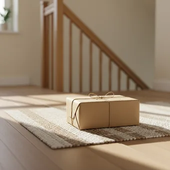
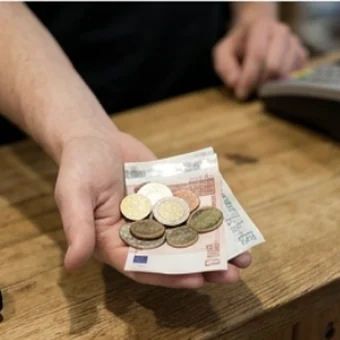
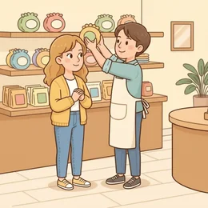
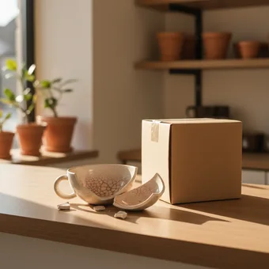
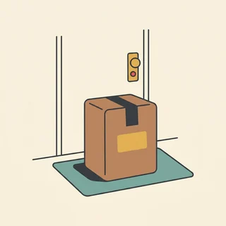
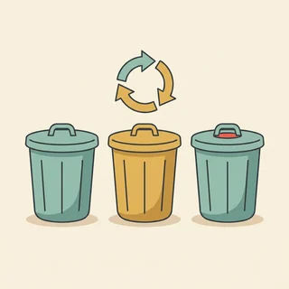

deutschoderwas · Sprechclub · Woche 7 · Strang C · Teil 1 · Montag, 26. Oktober
Geschenke: schenken, umtauschen, Geld schenken
Schenken ist in Deutschland heikler, als es aussieht. Zu teuer ist unangenehm, zu billig auch, Geld gilt bei den einen als praktisch und bei den anderen als lieblos — und wer etwas umtauschen will, erlebt oft die Überraschung, dass er gar kein Recht darauf hat. Heute holen wir uns die Wörter und die Sätze für all das.
Dein Niveau
Gleiches Thema, andere Sätze. Wechsle jederzeit — probier ruhig beide Seiten aus.
Was schenkt man und was auf keinen Fall?
In jedem Land gibt es ungeschriebene Regeln, und niemand sagt sie einem. In Deutschland gilt: lieber persönlich als teuer, lieber klein und passend als groß und beliebig. Und wenn du eingeladen bist, bringst du etwas mit — Blumen, Wein, etwas Selbstgemachtes. Mit leeren Händen zu kommen fällt auf.

Was hast du zuletzt verschenkt?
Was bringt man in deinem Heimatland mit, wenn man eingeladen ist?
Schenkst du lieber etwas Praktisches oder etwas Persönliches?
Woran merkst du, dass ein Geschenk unpassend war?
Wie viel Geld ist bei euch üblich — und wovon hängt das ab?
Gibt es Dinge, die man bei euch auf keinen Fall schenkt?
🔑 Der Satz, der beim Schenken immer geht:„Ich habe dir etwas Kleines mitgebracht.“ Das Wort klein ist entscheidend: Es nimmt dem Geschenk den Druck, verpflichtet den anderen zu nichts und funktioniert selbst dann, wenn das Geschenk gar nicht klein ist.
Und die Überraschung beim Umtauschen
Viele glauben, man dürfe gekaufte Dinge einfach zurückbringen. Im Laden stimmt das nicht: Ein gesetzliches Umtauschrecht gibt es dort in der Regel nicht — dass die meisten Geschäfte trotzdem umtauschen, ist Entgegenkommen, kein Anspruch. Anders ist es online und anders bei einem Mangel. Genau diese drei Fälle sollte man auseinanderhalten können.
Hast du schon einmal etwas umgetauscht?
Was hast du dabei gesagt?
Hebst du Kassenbons auf?
Warum tauschen Geschäfte um, obwohl sie nicht müssen?
Was ist der Unterschied zwischen umtauschen und reklamieren?
Wie fragst du nach etwas, auf das du keinen Anspruch hast?
💡 Drei Fälle, die man nicht verwechseln sollte:Umtausch im Laden — kein Anspruch, reine Kulanz, deshalb höflich fragen. Onlinekauf — in der Regel vierzehn Tage Widerrufsrecht, das ist ein echtes Recht. Mangel — wenn etwas kaputt oder falsch ist, greift die Gewährleistung, meist zwei Jahre. Das ist keine Rechtsberatung, aber es erklärt, warum du im Laden bitten und beim Mangel fordern kannst.
Zwölf Wörter vom Wunschzettel bis zur Reklamation
Sagt jedes Wort laut — mit Artikel. Und gleich einen Satz hinterher: Wann hast du dieses Wort zuletzt gebraucht?
das Geschenk
„Ich habe dir ein kleines Geschenk mitgebracht.“
💡 Das Verb ist schenken und steht mit zwei Objekten: Ich schenke dir (Dativ) ein Buch (Akkusativ). Genau darum geht es heute in der Grammatik.
der Wunsch
„Hast du einen Wunsch zum Geburtstag?“
💡 Dazu sich etwas wünschen — reflexiv und mit Dativ: Ich wünsche mir ein Buch. Und die Liste heißt der Wunschzettel, ursprünglich für Kinder zu Weihnachten, heute auch bei Erwachsenen völlig normal.
der Geburtstag
„Zum Geburtstag schenke ich ihr Blumen.“
💡 Achtung bei der Präposition: zum Geburtstag schenken, aber am Geburtstag feiern. Und eine deutsche Eigenheit: Vorher gratulieren bringt angeblich Unglück — die meisten warten wirklich bis zum Tag selbst.
die Einladung
„Danke für die Einladung — ich bringe etwas mit.“
💡 Das Verb einladen ist trennbar: Ich lade dich ein. Und es hat zwei Bedeutungen — jemanden zu sich bitten und für jemanden bezahlen. Ich lade dich ein heißt im Restaurant: Du zahlst nicht.

das Geld
„Bei uns schenkt man zur Hochzeit Geld.“
💡 Ein heikles Geschenk: Bei Hochzeiten und runden Geburtstagen ist Geld in Deutschland üblich, sonst gilt es schnell als lieblos. Der Ausweg heißt der Gutschein — Geld mit einer Absicht dahinter.
die Freude
„Damit machst du ihr eine große Freude.“
💡 Die feste Wendung lautet jemandem eine Freude machen — wieder Dativ und Akkusativ zusammen. Und das Verb sich freuen steht mit über (etwas Konkretes) oder auf (etwas Zukünftiges).

umtauschen
„Kann ich das noch umtauschen?“
💡 Trennbar: Ich tausche es um. Und im Laden gibt es dafür in der Regel kein Recht — deshalb fragt man höflich: Wäre es möglich, das umzutauschen? statt Ich möchte das umtauschen.
der Kassenbon
„Haben Sie den Kassenbon noch?“
💡 Auch der Kassenzettel oder der Beleg. Für einen Umtausch aus Kulanz verlangen ihn fast alle Geschäfte — bei einem echten Mangel reicht dagegen jeder andere Nachweis, zum Beispiel der Kontoauszug.
die Rücksendung
„Die Rücksendung ist kostenlos.“
💡 Im Alltag hörst du auch die Retoure. Online gilt in der Regel ein Widerrufsrecht von vierzehn Tagen — das ist ein echtes Recht und nicht dasselbe wie der Umtausch im Laden.

die Reklamation
„Das ist keine Frage von Kulanz, das ist eine Reklamation.“
💡 Der wichtigste Unterschied der Stunde: Beim Umtausch bittest du, bei der Reklamation hast du ein Recht. Das Verb ist reklamieren, und dazu gehört der Mangel — kaputt, unvollständig oder anders als beschrieben.

das Paket
„Das Paket stand vor der Tür.“
💡 Kleiner als ein Paket ist das Päckchen. Und wenn es beim Nachbarn abgegeben wurde, findest du den Benachrichtigungszettel im Briefkasten — ein Wort, das man einmal gelesen haben muss.

die Verschwendung
„Das meiste davon ist reine Verschwendung.“
💡 Das Verb ist verschwenden, und es steht mit Akkusativ: Zeit verschwenden, Geld verschwenden. Das Wort für Mittwoch — dann diskutieren wir genau darüber.
💡 Spiel „Drei Geschenke“: Jeder nennt drei Dinge — eines, über das er sich wirklich gefreut hat, eines, mit dem er nichts anfangen konnte, und eines, das er selbst verschenkt hat. Die anderen raten, welches welches war. Danach: Woran lag es jeweils?
Bitten oder fordern?
Ob du im Laden höflich fragst oder klar dein Recht einforderst, hängt an einer einzigen Frage: Ist mit der Ware etwas nicht in Ordnung? Wer die drei Fälle auseinanderhält, redet in jedem davon richtig.
🙏
der Umtausch
im Laden, kein Anspruch — Kulanz
Wäre es möglich, das umzutauschen?
📦
der Widerruf
online, meist vierzehn Tage — ein Recht
Ich möchte den Kauf widerrufen.
🔧
der Mangel
kaputt oder falsch — Gewährleistung
Der Artikel war beim Auspacken beschädigt.
✅ Funktioniert im Laden
Wäre es möglich, das noch umzutauschen? Ich habe den Bon dabei.
Warum das wirktDu bittest, und das ist hier auch richtig — ein Umtauschrecht gibt es im Laden in der Regel nicht. Wer freundlich fragt und den Bon dabeihat, bekommt in den allermeisten Fällen ein Ja.
❌ Funktioniert nicht
Ich habe ein Recht darauf, das umzutauschen.
Das ProblemDer Satz stimmt sachlich nicht — und das weiß die Person hinter der Theke besser als du. Damit verlierst du genau die Kulanz, auf die du angewiesen bist.
✅ Richtig beim Mangel
Die Tasse war beim Auspacken zerbrochen. Ich hätte gern Ersatz.
Warum das klar istHier forderst du, und das ist berechtigt. Wichtig sind zwei Dinge im Satz: was nicht in Ordnung ist und was du möchtest — Ersatz, Reparatur oder Geld zurück.
❌ Zu vage
Ich bin nicht zufrieden mit der Lieferung.
Das ProblemUnzufriedenheit ist kein Mangel. Solange nicht dasteht, was kaputt oder falsch ist, kann der andere nichts tun — und wird nachfragen, was Zeit kostet.
✅ Nimmt dem Geschenk den Druck
Ich habe dir etwas Kleines mitgebracht.
Warum das gut istEtwas Kleines verpflichtet den anderen zu nichts. Er muss sich nicht revanchieren und nicht übertrieben freuen — und genau deshalb freut er sich meistens ehrlicher.
❌ Macht Druck
Das war ziemlich teuer, aber du bist es mir wert.
Das ProblemDer Preis gehört nie ins Gespräch. Er verwandelt ein Geschenk in eine Rechnung, die der andere im Kopf offen hat — und beim nächsten Anlass zurückzahlen muss.
Es gibt keine Regel, aber verlässliche Anhaltspunkte:
Eingeladen zum Essen: Blumen, Wein oder etwas Selbstgemachtes. Zehn bis zwanzig Euro, mehr wäre unangenehm.
Geburtstag bei Freunden: zwanzig bis fünfzig Euro, je nach Nähe — und lieber persönlich als teuer.
Hochzeit: Geld ist üblich und wird oft erwartet; die Spanne liegt meist bei fünfzig bis hundertfünfzig Euro pro Person.
Im Beruf: gar nichts oder etwas sehr Kleines. Ein teures Geschenk an Vorgesetzte bringt beide in eine unangenehme Lage.
Und die Regel, die alles überschreibt: Wenn du unsicher bist, frag jemanden aus der Runde.Was schenkt ihr denn? ist eine völlig normale Frage — und die einzige, die zuverlässig funktioniert.
🎯 Zu zweit, eine Minute: Einer nennt eine Situation (kaputte Tasse, falsche Größe, online bestellt und doch nicht gewollt), der andere sagt sofort, ob er bittet oder fordert — und mit welchem Satz.
Vier Bausteine, und das Geschenk ist überreicht
Überreichen, sich bedanken, nachfragen, umtauschen. Vier Handgriffe in der Reihenfolge, in der sie im echten Leben vorkommen.
1 · 🎁 Überreichen Ich habe dir etwas Kleines mitgebrachtDas ist für dichIch hoffe, du kannst es gebrauchenAlles Gute zum Geburtstag!
So klingt esAlles Gute! Ich habe dir etwas Kleines mitgebracht.
2 · 🙏 Sich bedanken Das ist ja lieb, danke!Da hast du mir eine Freude gemachtDas wollte ich schon langeDas wäre doch nicht nötig gewesen
So klingt esOh, das ist lieb — damit hast du mir wirklich eine Freude gemacht.
3 · 🤔 Vorher nachfragen Hast du einen Wunsch?Was schenkt ihr denn?Brauchst du irgendetwas?Wäre ein Gutschein okay?
So klingt esSag mal, was schenkt ihr denn? Ich habe noch keine Idee.
4 · 🔄 Umtauschen Kann ich das noch umtauschen?Ich habe den Bon dabeiEs passt leider nichtGeht auch eine andere Größe?
So klingt esGuten Tag, kann ich das noch umtauschen? Ich habe den Bon dabei.
1 · 🎁 Feiner überreichen Eine Kleinigkeit für dichIch hoffe, ich habe deinen Geschmack getroffenFalls es nicht passt, liegt der Bon dabeiVon uns beiden
So klingt esEine Kleinigkeit für dich — falls es nicht passt, liegt der Bon dabei.
2 · 🙏 Ehrlich reagieren Darüber freue ich mich wirklichDas ist genau mein DingEhrlich gesagt weiß ich noch nicht, wo ich es hintueDarf ich es umtauschen, wenn es nicht passt?
So klingt esDarüber freue ich mich wirklich — das ist genau mein Ding.
3 · 💶 Über Geld sprechen Wollen wir zusammenlegen?Wie viel gebt ihr ungefähr?Ich würde einen Gutschein vorschlagenGeld finde ich in dem Fall passender
So klingt esWollen wir zusammenlegen? Dann können wir etwas Größeres schenken.
4 · 🧾 Reklamieren Der Artikel war beim Auspacken beschädigtIch hätte gern ErsatzDas entspricht nicht der BeschreibungIch möchte vom Kauf zurücktreten
So klingt esDer Artikel war beim Auspacken beschädigt — ich hätte gern Ersatz.
Verb das Geschenk die Person Höflichkeit
📣 Sofort anwenden: Denk an den nächsten Anlass, der bei dir ansteht. Sag alle vier Sätze — überreichen, bedanken, nachfragen, umtauschen. Der dritte ist der, den fast alle weglassen, und er erspart die meisten Fehlgriffe.
Vier Situationen — zwei Runden
Runde 1: Lest den Dialog zu zweit laut. Runde 2: Klappt die Zeilen zu und spielt ihn frei — mit einem echten Anlass aus eurem Leben.
Dialog 1 · „Das Geschenk überreichen“
Du kommst zu einer Geburtstagsfeier und überreichst dein Geschenk — klein gehalten, mit Bon dabei.
B
Alles Gute! Ich habe dir etwas Kleines mitgebracht.
🗣️ etwas Kleines nimmt den Druck raus. Und der Dativ dir steht vor dem Akkusativ etwas Kleines — genau die Reihenfolge von heute.tippen = Hilfe zeigen
A
Das wäre doch nicht nötig gewesen! Darf ich es gleich aufmachen?
B
Klar. Und falls es nicht passt: Der Bon liegt dabei.
🗣️ Der eleganteste Satz beim Schenken. Er erlaubt dem anderen ehrlich zu sein, ohne dass es unhöflich wird.tippen = Hilfe zeigen
A
Oh, das Buch wollte ich schon lange lesen. Danke dir!
B
Freut mich. Ich habe deine Schwester gefragt, was du dir wünschst.
🗣️ Zugeben, dass man gefragt hat. Das wirkt aufmerksam, nicht einfallslos — und ist im Deutschen völlig normal.tippen = Hilfe zeigen
Dialog 2 · „Umtauschen im Laden“
Der Pullover passt nicht. Du bittest um einen Umtausch — und weißt, dass du kein Recht darauf hast.
B
Guten Tag. Wäre es möglich, den Pullover noch umzutauschen? Ich habe den Bon dabei.
🗣️ Wäre es möglich statt ich möchte. Im Laden bittest du — ein Umtauschrecht gibt es dort in der Regel nicht.tippen = Hilfe zeigen
A
Wann haben Sie ihn denn gekauft?
B
Am Samstag. Er ist ungetragen, die Etiketten sind noch dran.
🗣️ Alle drei Punkte ungefragt liefern: Datum, Zustand, Etiketten. Genau danach würde sonst gefragt — so geht es schneller.tippen = Hilfe zeigen
A
Dann geht das. Möchten Sie eine andere Größe oder das Geld zurück?
B
Eine Nummer größer, wenn Sie die noch haben.
🗣️ Bei Kulanz nimmt man, was angeboten wird. Wer auf Geld besteht, obwohl Ersatz da ist, macht es sich unnötig schwer.tippen = Hilfe zeigen
A
Ich schaue kurz nach.
B
Danke, das ist nett von Ihnen.
🗣️ Sich für Kulanz bedanken. Es war kein Recht, sondern ein Entgegenkommen — und das darf man auch so behandeln.tippen = Hilfe zeigen
Dialog 3 · „Die Reklamation“
Die bestellte Tasse kam zerbrochen an. Hier bittest du nicht — hier sagst du klar, was war und was du möchtest.
B
Guten Tag, ich rufe wegen meiner Bestellung an. Die Tasse war beim Auspacken zerbrochen.
🗣️ Anlass und Sachverhalt in zwei Sätzen. Kein leider, keine Entschuldigung — bei einem Mangel bist du im Recht.tippen = Hilfe zeigen
A
Das tut mir leid. Haben Sie die Bestellnummer?
B
Ja, und Fotos habe ich auch gemacht. Ich hätte gern Ersatz.
🗣️ Sagen, was du möchtest. Ersatz, Reparatur oder Geld zurück — wer das nicht sagt, bekommt das, was der andere anbietet.tippen = Hilfe zeigen
A
Wir schicken Ihnen eine neue. Die alte können Sie behalten.
B
Sehr gern. Bekomme ich das noch schriftlich?
🗣️ Eine Zusage schriftlich bestätigen lassen. Zwei Sekunden Aufwand, und in vier Wochen erinnert sich niemand mehr anders.tippen = Hilfe zeigen
Dialog 4 · „Zusammenlegen“
Im Team steht ein Abschied an. Ihr klärt, ob ihr Geld schenkt und wie viel jeder gibt.
B
Sollen wir für Kerstin zusammenlegen? Dann können wir ihr etwas Größeres schenken.
🗣️ zusammenlegen ist das Wort dafür. Und beachte: ihr (Dativ) vor etwas Größeres (Akkusativ).tippen = Hilfe zeigen
A
Gute Idee. An wie viel hattest du gedacht?
B
Ich würde zehn Euro pro Person vorschlagen — und wer mehr geben will, gibt mehr.
🗣️ Eine Zahl nennen und gleich einen Ausweg lassen. So muss niemand sagen, dass es ihm zu viel ist.tippen = Hilfe zeigen
A
Und was kaufen wir?
B
Einen Gutschein für den Buchladen. Bei Geld allein hätte ich Bauchschmerzen.
🗣️ der Gutschein ist der Kompromiss zwischen praktisch und persönlich — Geld mit einer Absicht dahinter.tippen = Hilfe zeigen
🎭 Und jetzt ihr: Spielt Dialog 2 einmal freundlich und einmal so, dass der Kunde auf einem Recht besteht, das er nicht hat. Ihr hört sofort, wie schnell die Kulanz verschwindet.
🧩 Wem was: Dativ und Akkusativ im selben Satz
Ich schenke meiner Mutter ein Buch. Zwei Objekte in einem Satz — und beim Schenken kommt das ständig vor. Die Regel dahinter ist kurz, und die zweite Hälfte davon überrascht fast alle.
Verben wie schenken, geben, kaufen, zeigen, mitbringen, erzählen haben zwei Objekte: die Person im Dativ (wem?) und die Sache im Akkusativ (was?). Stehen beide als Nomen da, kommt zuerst der Dativ: Ich schenke meiner Mutterein Buch. Und jetzt der Teil, den man sich merken muss: Sobald eines davon ein Pronomen ist, wandert das Pronomen nach vorn. Ich schenke es meiner Mutter. · Ich schenke ihr ein Buch. Sind es zwei Pronomen, steht der Akkusativ zuerst: Ich schenke es ihr.
👤Wem? — die Person, Dativmeiner Mutter · ihr · dir
▾
🎁Was? — die Sache, Akkusativein Buch · es · den Gutschein
▾
1️⃣Zwei Nomen: Dativ zuerstIch schenke meiner Mutter ein Buch.
▾
🔀Pronomen nach vornIch schenke es meiner Mutter.
Wer?Ich
Verb auf Platz zweischenke
Wem? — Dativmeiner Mutter
Was? — Akkusativein Buch.
Die Reihenfolge in drei Fällen
Lies die drei Zeilen laut, dann hörst du es. Alles hängt daran, ob ein Pronomen im Spiel ist — und Pronomen drängeln sich immer nach vorn.
1️⃣
Zwei Nomen
Dativ vor Akkusativ
Ich schenke meiner Mutterein Buch.
2️⃣
Ein Pronomen
das Pronomen zuerst
Ich schenke es meiner Mutter.
3️⃣
Zwei Pronomen
Akkusativ vor Dativ
Ich schenke es ihr.
Ich schenke meiner Mutter ein BuchIch schenke ihr ein BuchIch schenke es meiner MutterIch schenke es ihrEr bringt seiner Kollegin Blumen mitEr bringt sie ihr mit
Nur Dativ, und trotzdem kein Objekt zum Anfassen
Ein paar Verben aus diesem Themenfeld haben gar kein Akkusativobjekt. Sie stehen nur mit dem Dativ — und das ist genau die Stelle, an der im Deutschen am häufigsten ein falscher Fall steht.
🙏
danken und gratulieren
immer Dativ, nie Akkusativ
Ich danke dir — nicht dich.
❤️
gefallen, passen, stehen
die Sache ist das Subjekt
Das Geschenk gefällt ihr.
📎
Und die Präposition dazu
danken für, gratulieren zu
Ich danke dir für das Geschenk.
Ich danke dir für das GeschenkIch gratuliere dir zum GeburtstagDas Geschenk gefällt ihr sehrDer Pullover passt mir nichtDie Farbe steht dir gutDas Buch gehört meiner Schwester
🧱 Bau die Sätze selbst
Tippe die Teile in der richtigen Reihenfolge an. Die eine Frage, die du dir stellen musst: Ist ein Pronomen dabei? Dann steht es vorn.
📖 Und jetzt im Zusammenhang
Ein Geburtstag, ein Geschenk, ein Umtausch — und eine Tasse, die es nicht überlebt hat. Wähle für jede Lücke das passende Wort.
Drei Sätze, und du hast alles:
Zwei Nomen: erst die Person, dann die Sache. Ich schenke meiner Mutter ein Buch.
Ein Pronomen: Das Pronomen drängelt sich nach vorn — egal welcher Fall. Ich schenke es meiner Mutter.
Zwei Pronomen: jetzt Akkusativ vor Dativ. Ich schenke es ihr. Nie ihr es.
Und der Test: Sprich es laut. Ich schenke ihr es klingt für deutsche Ohren sofort falsch — das Gefühl dafür kommt schneller, als du denkst.
Ein Satzpaar zum Auswendiglernen, in dem alles drinsteckt: „Ich schenke meiner Mutter ein Buch. Ich schenke es ihr zum Geburtstag.“ Wer diese zwei Sätze sicher hat, hat die ganze Regel.
🎭 Drei Situationen zu zweit
Einer will etwas, einer entscheidet. Danach tauschen — und beim zweiten Mal ohne Notizen. Regel für alle drei: mindestens ein Satz mit zwei Objekten, einmal mit Pronomen.
1 · Umtausch ohne Bon
A möchte einen Pullover umtauschen, hat aber den Kassenbon verloren. B arbeitet im Laden und darf ohne Bon eigentlich nicht. A muss freundlich bleiben und einen anderen Nachweis anbieten.
Wäre es möglich, das umzutauschen?Ich habe den Bon leider nicht mehrIch habe aber den KontoauszugGeht auch ein Gutschein?
Ich weiß, dass Sie das nicht müssenIch habe die Zahlung auf dem KontoWäre ein Gutschein für Sie ein Weg?Danke, das ist wirklich entgegenkommend
✅ Eine gute Runde enthältA hat gebeten und nicht gefordert, einen Ersatznachweis angeboten und am Ende akzeptiert, was möglich war. Der Satz ich habe ein Recht darauf ist nicht gefallen.
2 · Das falsche Geschenk
A hat B etwas geschenkt, das offensichtlich nicht passt. B möchte es ehrlich sagen, ohne A zu verletzen. A soll es leicht machen. Zwei Minuten, dann tauschen.
Ich habe dir etwas mitgebrachtDer Bon liegt dabeiSag ruhig, wenn es nicht passtDann tauschen wir es einfach um
Darüber freue ich mich wirklichEhrlich gesagt weiß ich noch nicht, wo ich es hintueDarf ich es umtauschen, ohne dass du es krummnimmst?Mir ist die Geste wichtiger als die Sache
✅ Eine gute Runde enthältB hat es ehrlich gesagt, ohne das Geschenk schlechtzumachen, und A hat es leicht gemacht statt beleidigt zu reagieren. Der Preis wurde nicht erwähnt.
3 · Was schenken wir dem Chef?
Im Team steht ein Abschied an. A will etwas Teures, B findet, dass ein teures Geschenk beide Seiten in eine unangenehme Lage bringt. Einigt euch auf einen Betrag und eine Form.
Sollen wir zusammenlegen?An wie viel hattest du gedacht?Zehn Euro pro PersonIch würde einen Gutschein vorschlagen
Bei einem teuren Geschenk hätte ich BauchschmerzenWer mehr geben will, gibt mehrEin Gutschein ist persönlicher als GeldDann fühlt sich niemand verpflichtet
✅ Eine gute Runde enthältEs steht am Ende ein konkreter Betrag und eine konkrete Form. Und beide haben daran gedacht, dass niemand in der Runde sich das Geschenk nicht leisten können soll.
🎴 Sprechkarten
Zieh eine Karte und sprich mindestens vier Sätze am Stück.
Deine Aufgabe
Tippe auf den Knopf.
⏱️ Die 90-Sekunden-Challenge
Ein Geschenk, anderthalb Minuten, freies Sprechen. Erzähl von einem, das gepasst hat, oder von einem, das danebenging — und was du daraus gelernt hast.
Dein Wort
das Geschenk
1:30
Erzähl es der Reihe nach, dann trägt dich die Zeit:
Wem hast du was geschenkt? Ich habe meiner Schwester …
Warum gerade das? Sie hatte sich … gewünscht.
Wie hat sie reagiert? Sie hat sich sehr darüber gefreut. / Man hat gemerkt, dass …
Und heute? Beim nächsten Mal würde ich …
Und wenn dir das Wort fehlt: Umschreib es. „So ein Ding, mit dem man …“ — genau das machen Muttersprachler auch, sie merken es nur nicht mehr.
⏱️ Spielregel: In jeder Runde muss ein Satz mit zwei Objekten vorkommen und einmal die Pronomen-Reihenfolge (Ich habe es ihr geschenkt). Wer ich danke dich sagt, gibt weiter.
✅ Sitzt es schon?
8 Fragen. Tippe auf deine Antwort — die Erklärung kommt sofort.
✍️ Lückentext
Wähle in jeder Lücke das passende Wort.
📣 Danach laut: Jeder sagt reihum einen Satz mit zwei Nomen (Ich schenke meiner Mutter ein Buch). Der Nachbar ersetzt sofort beide durch Pronomen (Ich schenke es ihr). Wer in die falsche Reihenfolge gerät, gibt weiter.
📮 Deine Hausaufgabe bis Mittwoch
Vier kleine Aufgaben, zusammen etwa 25 Minuten. Am Mittwoch ist Debatte — sind Geschenke sinnvoll oder Verschwendung? Mit dem, was du hier vorbereitest, hast du deine Argumente schon beisammen.
💡 Warum das hilft: Zwei Objekte in einem Satz kommen im Deutschen ständig vor — beim Schenken, beim Erzählen, beim Zeigen, beim Mitbringen. Und die Pronomen-Reihenfolge ist eine der wenigen Regeln, bei denen ein Fehler sofort auffällt, weil sie für deutsche Ohren so festgefahren ist. Wer sie hat, klingt in genau diesen Alltagssätzen plötzlich sicher.
0 von 0 Aufgaben geschafft.
So verändert sich die Reihenfolge:
Ich schenke meiner Mutter ein Buch. → Ich schenke es ihr.
Er bringt seiner Kollegin Blumen mit. → Er bringt sie ihr mit.
Wir zeigen den Gästen die Wohnung. → Wir zeigen sie ihnen.
Sie kauft ihrem Sohn einen Gutschein. → Sie kauft ihn ihm.
Ich erzähle dir die Geschichte. → Ich erzähle sie dir.
Ein einziger Test: Steht ein Pronomen im Satz? Dann nach vorn damit. Sind es zwei, kommt der Akkusativ zuerst — es ihr, nie ihr es.
So ist eine Reklamation aufgebaut, die schnell bearbeitet wird:
Der Betreff: Bestellnummer und Sache. Reklamation zu Bestellung 4711 — Tasse beschädigt.
Der Sachverhalt: zwei Sätze, mit Datum. Was war beim Auspacken, nicht was du dabei gefühlt hast.
Der Nachweis: Fotos, Bestellnummer, Lieferdatum — alles, was der andere sonst erfragen müsste.
Dein Wunsch: konkret und einer. Ich hätte gern Ersatz. Nicht drei Möglichkeiten zur Auswahl.
Die Frist:Ich bitte um Rückmeldung bis zum … — ohne Datum bleibt der Vorgang liegen.
Und der Unterschied zum Umtausch, den man im Ton hören sollte: Bei einem Mangel bittest du nicht um Kulanz, sondern nennst dein Anliegen. Freundlich, aber ohne Konjunktiv-Girlanden.
📬 Abgabe: Schick deine Sprachnachricht und die umgebauten Sätze bis Dienstagabend. Ich achte besonders auf die Pronomen-Reihenfolge — und darauf, ob nach danken und gratulieren wirklich der Dativ steht.
🔜 Am Mittwoch, Teil 2:Die Debatte — sind Geschenke sinnvoll oder Verschwendung? Heute ging es darum, wie man schenkt. Am Mittwoch um die unbequemere Frage: ob das Ganze überhaupt einen Sinn hat, wenn am Ende die Hälfte umgetauscht oder weggeworfen wird.